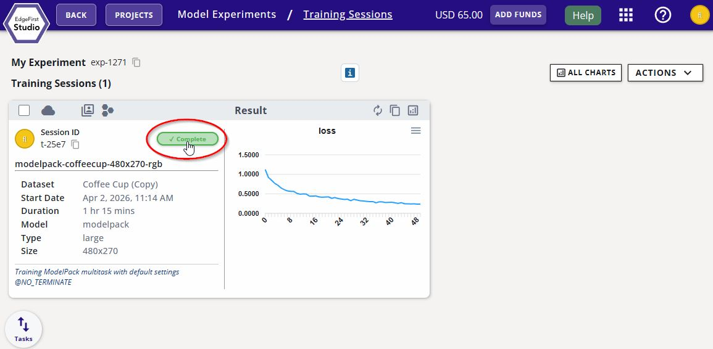
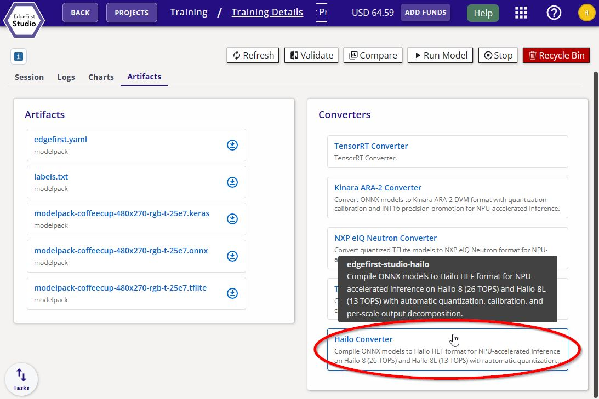
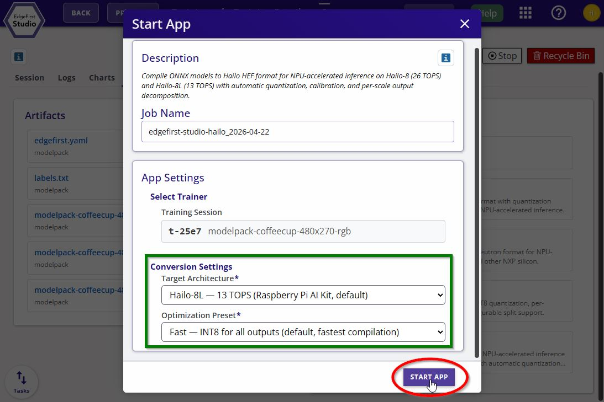

Hailo Converter
The Hailo Converter compiles an ONNX model exported from an EdgeFirst Studio training session into a Hailo Executable Format (.hef) binary that runs on Hailo's edge NPUs:
- Hailo-8L (13 TOPS) — the silicon in the Raspberry Pi 5 AI Kit and other entry-class modules.
- Hailo-8 (26 TOPS) — the higher-throughput M.2 / mPCIe parts.
The Hailo Converter applies Smart Quantization by automatic per-scale graph surgery. On Hailo this is not optional — the per-context SRAM budget on Hailo silicon cannot hold a typical detection head's full concatenated output tensor in a single pass, and the Hailo Dataflow Compiler will reject the model outright. Cutting the graph at per-scale endpoints makes each tensor small enough to fit, and gives each one its own independently calibrated INT8 (or INT16) scale as a structural by-product.
Studio Launch Form
| Field | Values | Default | Meaning |
|---|---|---|---|
hw_arch |
hailo8l / hailo8 |
hailo8l |
Target Hailo silicon. HEF binaries are not interchangeable between Hailo-8 and Hailo-8L — this field must match the deployment target exactly. |
preset |
fast / balanced / accurate |
fast |
Quantization-precision preset. Controls where INT16 promotion is applied and whether the Dataflow Compiler runs its iterative calibration-and-fine-tune pass. |
hw_arch — pick the right Hailo
| Value | Hardware | Typical product |
|---|---|---|
hailo8l (default) |
Hailo-8L, 13 TOPS | Raspberry Pi AI Kit, low-power modules |
hailo8 |
Hailo-8, 26 TOPS | M.2 / mPCIe accelerator modules |
HEF binaries compiled for one Hailo silicon will not run on the other. If you are unsure which part is in your deployment hardware, confirm against the module datasheet before launching the converter.
preset — accuracy vs. compile time
| Preset | Precision policy | Typical compile time | When to use |
|---|---|---|---|
fast (default) |
INT8 everywhere | ~1 hour | Initial bring-up, rapid iteration, INT8-friendly models |
balanced |
INT16 for boxes (regression outputs); INT8 elsewhere | Hours | Production detection models — the best accuracy/compile-time ratio |
accurate |
INT16 for boxes and scores; INT8 elsewhere; plus the Dataflow Compiler's iterative calibration fine-tune pass | Hours (typically 2–6 for YOLO-family heads, longer for attention-heavy models) | Accuracy-critical deployments (instance segmentation, tight mAP targets) |
The preset drives Hailo's quantization_param directives; boundary names from the trainer's split_hints drive which precision goes where, with no model-family-specific hard-coding.
What You Get
A self-contained .hef binary with:
- The compiled Hailo neural-network graph (quantized weights, per-context partitioning, fused operations).
- Embedded EdgeFirst metadata (
edgefirst.json+labels.txt) ZIP-appended to the file. - A compiled
outputs[]array describing the per-scale physical children, their per-tensor quantization, and any activations the Dataflow Compiler fused into the output quantization step.
For accuracy-sensitive workloads, the converter folds the per-class sigmoid back into the per-scale convolution output quantization via the Dataflow Compiler's change_output_activation mechanism. The compiled metadata records activation_applied: sigmoid on those children so the runtime decoder knows not to re-apply sigmoid after dequantization. DFL softmax is not invertible into a single-tensor quantization, so DFL always runs in float on the HAL.
Converting Your Model
Once training completes in EdgeFirst Studio:
-
Click on the completed training session.

Completed Training Session -
Navigate to the Artifacts tab and click the Hailo Converter button under Converters on the right.

Hailo Converter -
Pick the target hardware and quantization preset, then click Start App to begin the conversion.

Hailo Converter Options
Calibration
Calibration is fully automatic. EdgeFirst Studio passes the training session's calibration snapshot to the Dataflow Compiler, which normalizes pixel values into its expected [0, 255] domain. The [0, 1] normalization (and the optional ImageNet mean / std) are folded back into the input quantization via a normalization() directive in the compiled .alls script, so the deployed model accepts raw uint8 camera pixels with no CPU-side preprocessing required.
Hailo recommends 1024 calibration images for stable results; the Studio-provided snapshot is sized accordingly.
Notes
- The converter consumes ONNX exported from an EdgeFirst Studio training session; Studio's training pipelines always emit the right format.
- Attention-heavy models (YOLO11 C2PSA, YOLO26) are detected automatically and compiled with the appropriate Dataflow Compiler overrides — no user action required, but compile time will be on the longer end of the range for the chosen preset.
Known Limitations
- HEF binaries are silicon-locked: a
hailo8lHEF will not load on Hailo-8, and vice versa. - Per-scale splitting is required by the hardware and is therefore automatic; the converter does not expose a
combinedorlogical-onlymode. - The
accuratepreset can run for many hours on large models because of the iterative calibration-and-fine-tune pass. Plan conversion jobs accordingly. - Compiled output tensors are always NHWC, regardless of the input ONNX layout. The compiled
outputs[]reflects the NHWC physical shape; the runtime decoder handles layout transparently.